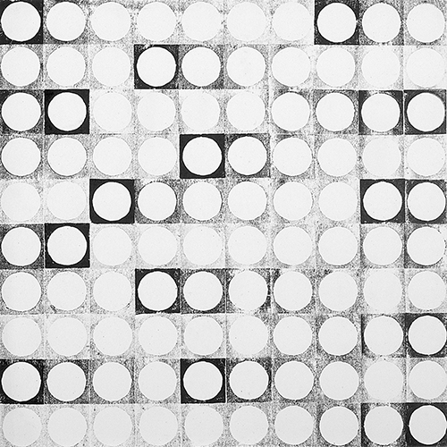

rhythmus

Das Spiel Rhythmus beschäftigt sich mit dem Prinzip des Stempelns. Bleibt sich ein Abdruck immer
gleich? Welchen Reiz hat die Wiederholung? Welchen Reiz hat die Variation? Wann beginnen wir,
eine Abfolge zu lesen? Wie geben Hell und Dunkel und alle Töne dazwischen eine Lesart vor?
Wie erzeugen sie Höhen und Tiefen im Bild? Kann ein Kreis gleichzeitig ein Quadrat sein? Wie
schreiben sich Formen ineinander ein? Und welche weiteren Formen, Muster und Rhythmen können
aus ihnen entstehen?
werk
Die Stempeldrucke von Jo Enzweiler spielen mit den Formen Kreis und Quadrat. Es sind ganz frühe Arbeiten des Künstlers.
Zum ersten Mal experimentiert er hier mit den Themen Wiederholung und Variation. Der Stempel ist dafür das ideale
Werkzeug. Allerdings benutzt er keinen vorgefertigten Stempel, sondern baut sich seinen eigenen so genannten
Druckstock. Grundsätzlich ist jedes Ding dazu geeignet, ein Stempel zu sein, man muss es nur in Farbe tauchen und
auf eine Oberfläche drücken, so dass ein Abdruck entsteht. Später wird er dafür zum Beispiel auch mit aufgeschnittenen
Kartoffeln arbeiten.
Dieser Stempel ist aus Holz und von ihm selbst zugeschnitten und gefräst. Der Druckstock ist quadratisch mit einem ausgesparten Kreis. Stempeldrucke sind niemals exakt gleicht, sondern immer abhängig vom ausgeübten Druck und der Menge der Farbe. Damit arbeitet der Künstler hier: Er taucht den Stempel nicht nach jedem Abdruck erneut in die Farbe, sondern druckt so lange, bis keine Farbe mehr am Stempel ist und wiederholt das, bis die ganze Fläche vollgestempelt ist. So erzeugt er Räumlichkeit im Bild. Er geht dabei sehr behutsam vor und hält sich an ein vom Stempel selbst erzeugtes Raster. Es entsteht der Eindruck von Licht und Schatten, von Helligkeiten, Nuancen, Höhen und Tiefen und von Rhythmus. Das Motiv, ein in ein Quadrat eingestellter Kreis, wird dir noch in einigen anderen Arbeiten begegnen, z.B. beim Schachspiel und viel später bei der Platzgestaltung in Malstatt. Der Kreis und die Wiederholung sind wiederkehrende Themen in den Kunstwerken von Jo Enzweiler, d.h. er greift in seinem Schaffen Motive und Gedanken wieder auf, bewegt sich also auch im übertragenen Sinne im Kreis:
»Man kann sagen, dass man sich immer im Kreis dreht. [...] Das heißt, der Künstler sucht und findet. [...] Und wenn man ehrlich ist, stellt man oft doch fest, dass man da schon einmal war, wo man sich plötzlich wieder bewegt. Aber es kann ja gerade interessant sein, wenn man an diesen Punkt wieder kommt und in der Lage ist, das, was man schon einmal gedacht hat, aufzugreifen, zu vertiefen und zu verändern, auf den Prüfstand zu stellen, vielleicht sogar zu verwerfen.«
(Jo Enzweiler)
Dieser Stempel ist aus Holz und von ihm selbst zugeschnitten und gefräst. Der Druckstock ist quadratisch mit einem ausgesparten Kreis. Stempeldrucke sind niemals exakt gleicht, sondern immer abhängig vom ausgeübten Druck und der Menge der Farbe. Damit arbeitet der Künstler hier: Er taucht den Stempel nicht nach jedem Abdruck erneut in die Farbe, sondern druckt so lange, bis keine Farbe mehr am Stempel ist und wiederholt das, bis die ganze Fläche vollgestempelt ist. So erzeugt er Räumlichkeit im Bild. Er geht dabei sehr behutsam vor und hält sich an ein vom Stempel selbst erzeugtes Raster. Es entsteht der Eindruck von Licht und Schatten, von Helligkeiten, Nuancen, Höhen und Tiefen und von Rhythmus. Das Motiv, ein in ein Quadrat eingestellter Kreis, wird dir noch in einigen anderen Arbeiten begegnen, z.B. beim Schachspiel und viel später bei der Platzgestaltung in Malstatt. Der Kreis und die Wiederholung sind wiederkehrende Themen in den Kunstwerken von Jo Enzweiler, d.h. er greift in seinem Schaffen Motive und Gedanken wieder auf, bewegt sich also auch im übertragenen Sinne im Kreis:
»Man kann sagen, dass man sich immer im Kreis dreht. [...] Das heißt, der Künstler sucht und findet. [...] Und wenn man ehrlich ist, stellt man oft doch fest, dass man da schon einmal war, wo man sich plötzlich wieder bewegt. Aber es kann ja gerade interessant sein, wenn man an diesen Punkt wieder kommt und in der Lage ist, das, was man schon einmal gedacht hat, aufzugreifen, zu vertiefen und zu verändern, auf den Prüfstand zu stellen, vielleicht sogar zu verwerfen.«
(Jo Enzweiler)

Stempeldrucke, 1959, 44 ✕ 44 cm bzw. 49 × 49 cm (Fotos: Hanns-Georg Jost)
galerie